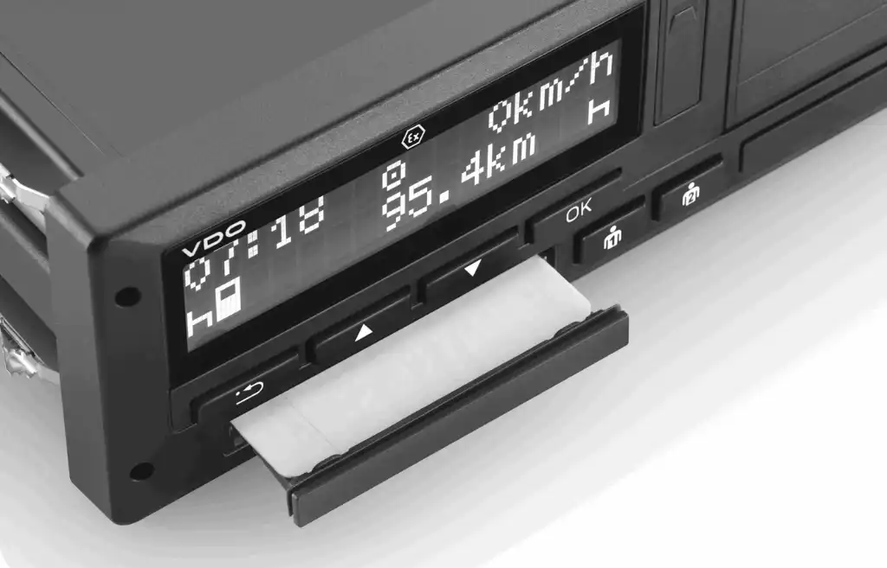

Общая
Наши главные принципы – это качество установки, гарантия и индивидуальный подход к каждому клиенту. Установив оборудование в нашей компании, вы получите стабильно работающий тахограф, целостность штатной электроники и отсутствие проблем с контролерами.
У нас тахографы для автотранспорта можно приобрести по привлекательным ценам, а также заказать их установку на транспорт. На сегодняшний день предусмотрены даже штрафы для частных водителей и транспортных организаций, в машинах которых нет тахографов. Подобные приспособления имеют немало преимуществ: позволяют контролировать действия экипажа; дают возможность отслеживать маршрут автомобиля; показывают, соблюдал ли водитель скоростной режим, как расходовалось топливо на заданном маршруте; подобный прибор дает возможность перемещения по всей стране и в странах Евросоюза; сохраняет здоровье водителя, контролируя режим отдыха и труда.